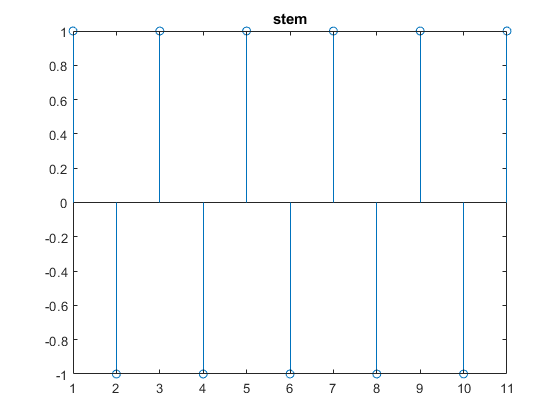
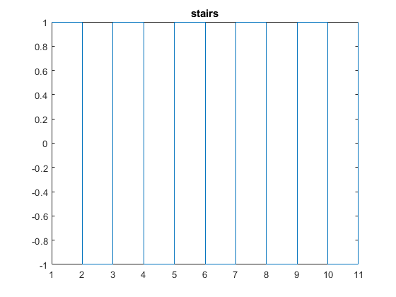
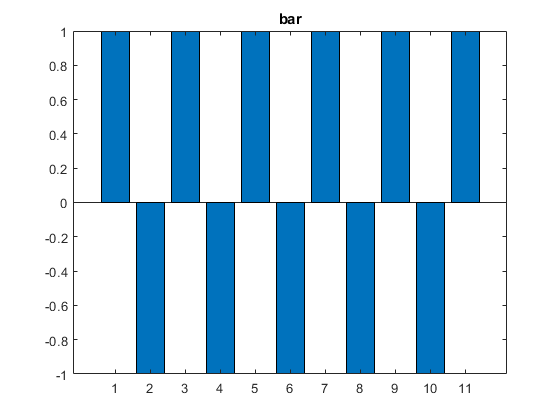
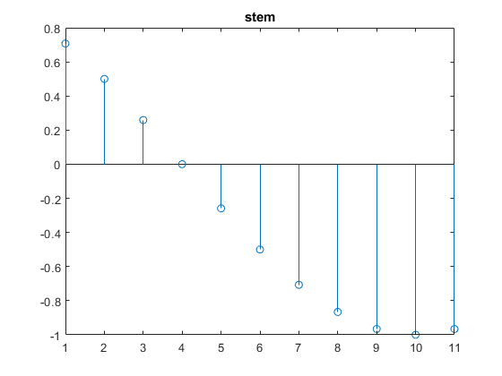
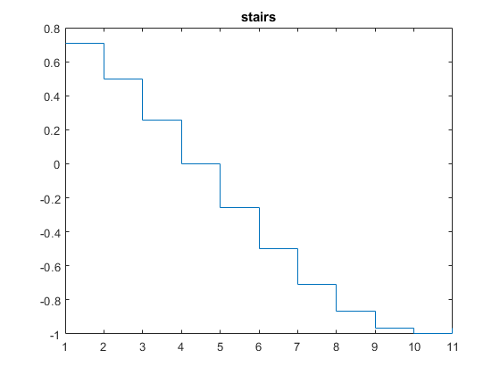
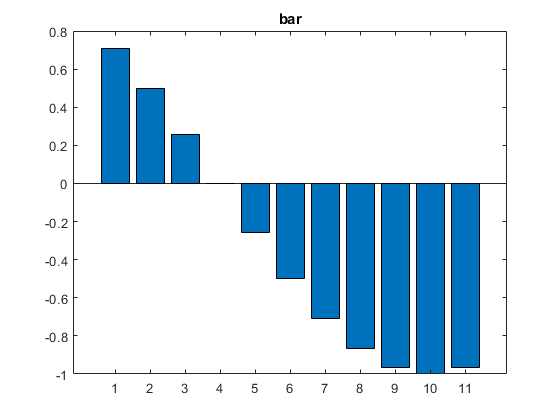
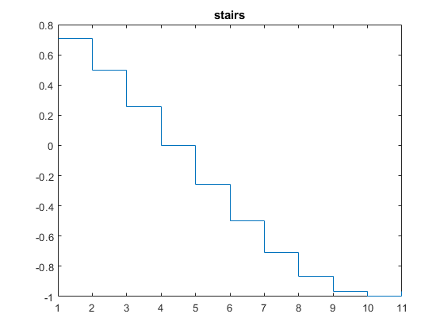
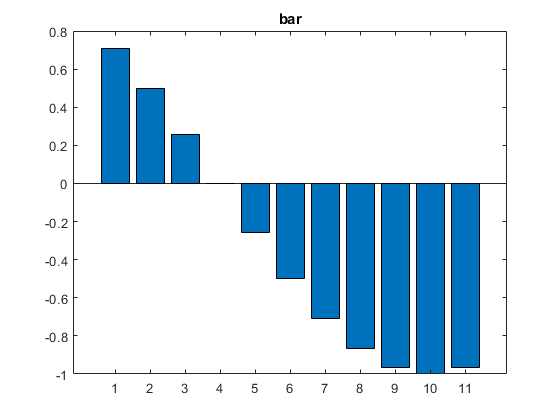
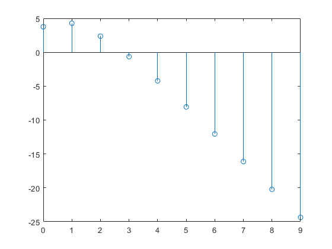

Laboratório de Sistemas Dinâicos
Prática 02 18/03/2024 Autores: Victor Hugo Daia Lorenzato e Whilker Henrique Santos Silva
Contents
Limpar workspcade
close all;
clear;
clc;
Ex01
syms a b c d; M=[a b; c d]; determinante = det(M); inversa = inv(M); traco = trace(M); % Exibe os resultados disp('Determinante:'); disp(determinante); disp('Inversa:'); disp(inversa); disp('Traço:'); disp(traco);
Determinante: a*d - b*c Inversa: [ d/(a*d - b*c), -b/(a*d - b*c)] [-c/(a*d - b*c), a/(a*d - b*c)] Traço: a + d
Ex02 A
n = 0:10; x_n = sym((-1).^n); figure; stem(x_n); title('stem'); figure; stairs(x_n); title('stairs'); figure; bar(x_n); title('bar');  
Ex02 B
n = 0:10; x_n = sym(cos(pi.*n/12 + pi/4)); figure; stem(x_n); title('stem'); figure; stairs(x_n); title('stairs'); figure; bar(x_n); title('bar');
  
  Ex03
y = zeros(1,3); % Y[0] = x[n-1] + 2y[n-1] y(1) = (2) + 2*(10); for n = 2:3 y(n) = 2 + 2*y(n-1); end for n = 1:3 fprintf("Y[%d] = %d\n",n-1 ,y(n)); end
Y[0] = 22 Y[1] = 46 Y[2] = 94
Ex04
y = zeros(1,10); %Y[0] = x[n] - 2x[n-1] + y[n-1] - 0.24y[n-2] y(1) = (0) - (2*(-1)) + (2) - (0.24*(1)); %Y[1] = x[n] - 2x[n-1] + y[n-1] - 0.24y[n-2] y(2) = (1) - 2*(0) + y(1) - 0.24*(2); for n = 3:10 y(n) = (n) - 2*(n-1) + y(n-1) - 0.24*y(n-2); end figure; n = 0:9; stem(n,y);